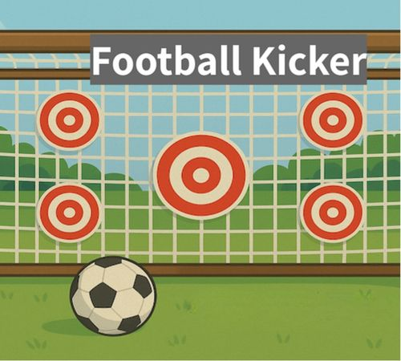

Campus Peres High school
קמפוס פרס, חולון
ברוח הייטק-קריירה
ברוח הייטק-קריירה
alt
ctrl

Alternative
Controllers Lab
Controllers Lab
Why?
במגמה אנו בוחרים לעסוק גם במשחקי מחשב פיזיים: לצד הפיתוח הדיגיטלי, התלמידים מתכננים ובונים אמצעי שליטה פיזיים — ממשקים שמתרחבים מעבר למסך ומתקיימים בעולם הממשי.
העבודה משלבת תכנון וייצור בידיים, חשיבה ארגונומית, ופיתוח חוויית משתמש גופנית וחברתית — כזו שמתייחסת לתנועה, למאמץ, לנוכחות במרחב ולמפגש בין שחקנים.
כאן נשתמש בעמוד כ”יומן מעבדה”: ניסויים, הצלחות, תקלות מצחיקות, ותיעוד של תהליך העיצוב.